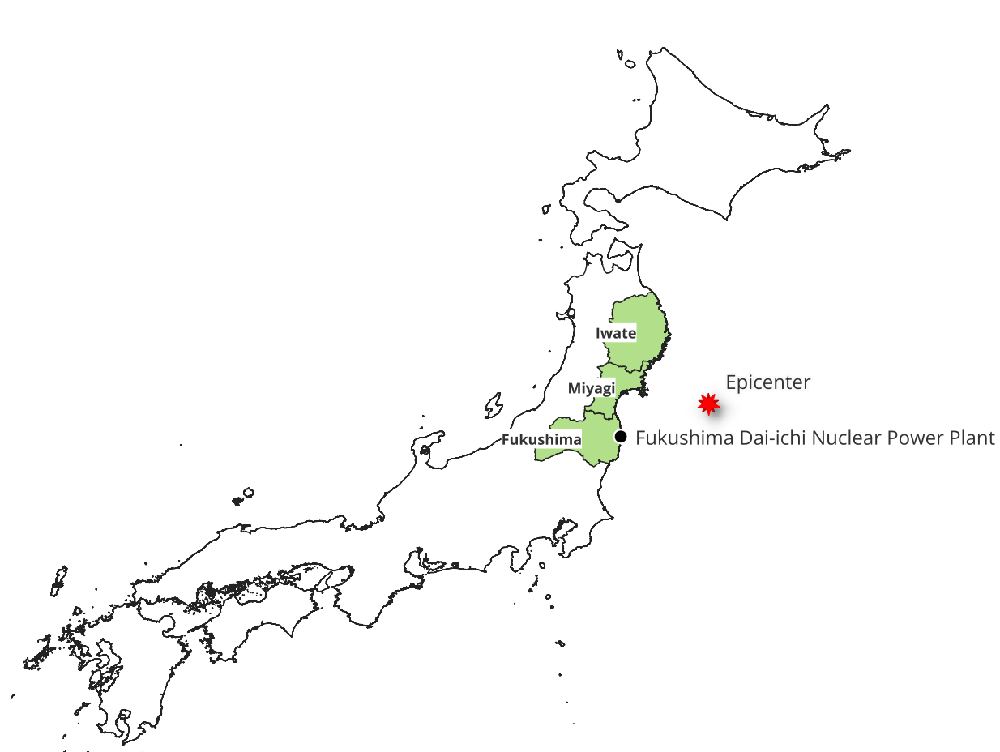
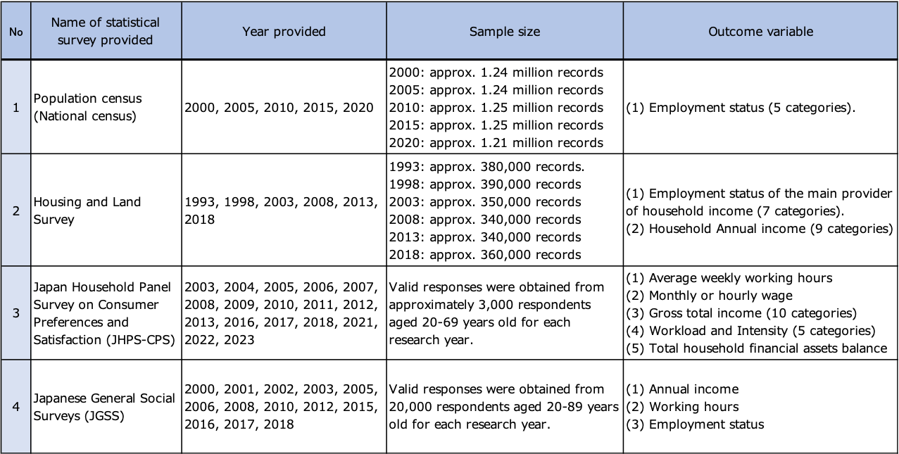

The impact of large-scale natural disasters on Gender Employment Gaps remains insufficiently understood, despite both being crucial policy concerns. Previous studies present mixed findings on the impact of natural disasters on gender inequality, with some research indicating that such disasters exacerbate gender gaps while others suggest a narrowing of these disparities. The Great East Japan Earthquake presented a unique opportunity to examine the dynamics of labor market responses to significant external shocks. This study focuses on Fukushima Prefecture, an area profoundly affected by both the earthquake and subsequent nuclear incident, to analyze the short-term and long-term impacts on the gender employment gap.
Firstly, this study contributes to the literature by synthesizing two seemingly contradictory theoretical frameworks concerning disasters and gender disparities in labor markets. On one hand, development economics posits that shock-coping strategies may attenuate gender gaps through increased labor supply. On the other hand, the Risk Adjustment Hypothesis suggests that shocks disproportionately exclude women from the workforce. By reconciling these ostensibly divergent perspectives, this study offers a nuanced understanding of gender-based labor outcomes in the context of disasters.
Secondly, the model incorporates the concepts of economic shocks and adaptation mechanisms. The immediate aftermath of the disaster likely triggered rapid changes in employment patterns. However, over time, households develop adaptation strategies, including adjustments in labor supply preferences and reallocation of household labor responsibilities.
Lastly, the model considers the impact of community structure changes on household decision-making. The earthquake and its aftermath significantly disrupted local infrastructure and social networks, potentially altering the context in which households make employment decisions. Additionally, the disruption of traditional gender norms and local gift economies may have compelled women to enter the labor market. This study posits that long-term community rebuilding efforts can influence labor market dynamics and potentially reshape gender roles within households and the broader community.
By integrating these three elements - household decision-making, economic shocks and adaptation, and community disruption - the theoretical model provides a comprehensive framework for understanding the complex interplay of factors affecting the gender employment gap in the aftermath of a natural disaster.
Background
The Great East Japan Earthquake
In Japan, the triple disaster of the Great East Japan Earthquake, the ensuing tsunami, and the Fukushima Daiichi nuclear crisis will have enduring implications on public perceptions of both local and national government authorities, as well as specialists in relevant fields. Furthermore, this disaster has profoundly reshaped attitudes towards nuclear energy, highlighting its risks and prompting widespread reconsideration of its role in Japan’s energy strategy.
The Great East Japan Earthquake of March 2011 resulted in a tripartite catastrophe, comprising a magnitude 9.0 earthquake, a devastating tsunami, and a nuclear accident at the Fukushima Dai-ichi Nuclear Power plant. This disaster precipitated a severe humanitarian crisis, causing extensive damage particularly in the Iwate, Miyagi, and Fukushima prefectures in northeast Japan. According to the National Police Agency, 15,900 people lost their lives and 2,523 people remain unaccounted for, primarily as a result of the massive tsunami that struck the eastern coast of Japan. The affected prefectures account for 99.6% of total fatalities and 99.8% of total missing persons. In addition, a total of 3,784 fatalities and casualties were recognized as disaster-related deaths in Japan due to the exacerbation of chronic illnesses or suicide during evacuation. Approximately 90% of fatalities were attributed to drowning. Table 1 presents a summary of the damages in the affected prefectures. The map below indicates the epicenter of the earthquake.

Fukushima Prefecture experienced a compound disaster involving both the tsunami triggered by the earthquake and the subsequent nuclear accident. The nuclear incident, in particular, necessitated large-scale evacuations, significantly disrupting local communities and labor markets. This unprecedented situation provides a unique context for examining the long-term socioeconomic impacts of compound disasters.
Gender Dimensions of Disaster Risk and Resilience
According to the latest 2024 Global Gender Gap Report by the World Economic Forum (WEF), Japan ranks 118th out of 146 countries, placing it at the bottom among the G7 nations. Particularly, its rankings in the "Economic" and "Political" domains are notably low, with the "Economic" ranking being 120th out of 146 countries. Japan continues to exhibit substantial gender disparities in the economic sector, with the elimination of wage gaps remaining a significant challenge.
The ‘Act on Promotion of Women’s Participation and Advancement in the Workplace’ enacted in April 2016 has led to the development of an environment conducive to working women of child-rearing generations, with initiatives such as the introduction of a reduced working hours system, restrictions on overtime work, and the establishment of childcare facilities within companies. The Gender Equality Bureau of the Cabinet Office has also focused on supporting women in disaster-affected areas by addressing reconstruction efforts from a gender perspective, catering to the specific needs of women, and addressing child-rearing requirements.
Literature review
Nearly every empirical study of natural disasters finds short-term declines in either income or employment especially for groups vulnerable to disasters, such as primary industry workers, non-regular workers, women, and the elderly.
Literature on a risk adjustment hypothesis
The risk adjustment hypothesis in labor economics suggests that during economic shocks or natural disasters, women are more vulnerable to labor market exclusion and face higher risks of deteriorating work conditions or unemployment compared to men.
The non-regular workers, often function as ’adjustment valves,’ absorbing economic shocks. These groups are disproportionately affected, serving as mechanisms to mitigate broader economic impacts. This framework illuminates the gender-based disparities in employment stability and the uneven distribution of economic resilience across worker categories during crises. For instance, examines the economic impact of the 2010 earthquake in Haiti, focusing on changes in household composition and employment retention. Authors found that the earthquake caused a significant reduction in employment rates, from 52.6% prior to the earthquake to 28.6% five months post-event. Gender disparities were evident, with only 34.2% of women retaining their employment compared to 55.6% of men.
identified significant income shocks from Typhoon Ketsana in Vietnam using satellite imagery and household panel data. They found that affected households experienced a 10% income decline, primarily due to crop losses. The study revealed that internal labor migration to urban areas served as a crucial coping mechanism, with households leveraging both existing migrant networks and sending new migrants to mitigate economic impacts through remittances.
Literature on a shock coping strategy
On the other hand, development economics posits that households increase their labor supply as a shock-coping strategy in response to natural disasters. This phenomenon is part of the broader concept of non-market insurance mechanisms, which play a crucial role in post-disaster recovery and risk management. Several studies demonstrate that labor markets can function as an ex-post risk coping mechanism following natural disasters. Studies have shown that households, particularly women, increase their labor supply as a risk mitigation strategy.
conducted a counterfactual analysis using a balanced panel of 95 Italian provinces, examining the impact of 22 earthquakes on output and employment from 1986 to 2011. Their study, which compared affected provinces with similar neighboring provinces, revealed that the economic contraction following seismic events was generally minimal. In some instances, the net effect on output and employment was positive, as reconstruction activities outweighed the destruction of physical capital.
analyzed Hurricane Katrina’s long-term economic impact on New Orleans residents. While victims initially experienced significant income losses and reduced employment, within a few years their incomes and employment rates not only recovered but surpassed those of a control group.
demonstrate that natural disasters can increase women’s labor force participation. Using georeferenced longitudinal household panel data and a difference-in-differences approach, they found that severe flooding in Bangladesh led to a 13 percentage point increase in women’s employment probability. This effect was particularly pronounced among lower-income households and women previously engaged in unpaid family farm work. The study reveals that women entered the workforce to mitigate income losses, especially in agriculture-dependent households. Additionally, women who transitioned to paid work outside family farms experienced increased household decision-making power, supporting theories of economic empowerment through independent income.
This study tries to fill gaps in the still sparse literature on the impact of natural disasters on gender disparities by differentiating between short-term and long-term effects, addressing the contradictory findings of existing research that suggests either an exacerbation or a reduction of gender gaps.
Pre-Disaster Labor Market Structure and Post-Disaster Impact
This section examines the structure of Fukushima Prefecture’s labor market before the disaster, using data from the 2010 Population Census to overview occupations and employment types by gender. It then explores the economic impact of the disaster.
Employment sector and type in Fukushima pref
Examining the proportion of employed persons aged 15 and over by industry and sex in Fukushima Prefecture, manufacturing accounts for the highest share among males at 23.5%, followed by construction at 12.9%. In contrast, construction represents only 2.6% of female employment (Figure [fig:fukushima_employment]).
Analysis of Fukushima Prefecture’s workforce reveals notable disparities (Figure [fig:fukushima_Proportion_Employed]). The Agriculture, Forestry, and Fisheries sector, most affected by the tsunami and nuclear disaster, has the highest proportion of workers aged 65+ for both genders. Conversely, the Construction industry, benefiting from reconstruction demand, is 86.1% male. These pre-existing gender and age disparities in employment distribution significantly influence how natural disasters impact different demographic groups within the workforce.
width=
width=
width=
Source: Statistics Bureau, Ministry of Internal Affairs and Communications, Japan. "2010 Population Census."
In Fukushima Prefecture, employment types among those aged 15 and over vary significantly by gender across occupations (Figure [fig:fukushima_Proportion_Occupation]). While 62.7% of male clerical workers are regular employees, only 40.1% of females are. Conversely, 36.8% of women are part-time or temporary workers, compared to 9.8% of men. This gender disparity in employment status can lead to disproportionate impacts during natural disasters. Notably, in agriculture, forestry, and fishery, 73.0% of men are self-employed, while 81.2% of women are family workers. This suggests a gendered division of labor in family businesses, where husbands are owners and wives are employees. Consequently, women’s labor may serve as a buffer during crises, being more susceptible to fluctuations than men’s.
The Impact of Evacuation on Labour Force
The nuclear accident triggered significant demographic shifts in Fukushima Prefecture. Government issued evacuation orders for 12 municipalities surrounding the Fukushima nuclear power plant, forcing residents into long-term and widespread evacuation both within and outside the prefecture. According to the Reconstruction Agency, the number of evacuees from Fukushima Prefecture was reported as 59,464 (2.9% of Fukushima’s total population) as of December 2011, nine months after the earthquake. Additionally, the number of evacuees within Fukushima Prefecture was 95,200. Therefore, a total of 154,664 people (7.6% of Fukushima’s total population) became evacuees, and this number still stood at 110,880 five years after the disaster.
As shown in Figure 1, the official net migration plummeted to -31,381 in 2011 and -13,843 in 20121. This exodus was most pronounced among children under 15 and adults aged 25-44, likely representing family units. Notably, female outmigration surpassed that of male in the 25-44 age group, corroborated by substantial decreases in kindergarten and elementary school enrollments. This pattern suggests a disproportionate evacuation of children and mothers due to nuclear safety concerns. However, by 2014-2015, a partial reversal emerged, characterized by net positive male migration, indicating a gender-imbalanced return trend. The proportion of female net out-migration to total net out-migration in 2014 and 2015 surged to 140.2% and 122.4% respectively, indicating a larger positive net migration for males than females. This complex migration pattern underscores the profound and lasting demographic impact of the disaster on Fukushima, with initial family-centric outmigration followed by a male-led return phase.

Labour Force Participation Rate in Fukushima pref
Did women’s labor force participation in Fukushima Prefecture increase more than the national average after the disaster? The large-scale outmigration of working-age population (25-44 years old), especially women, potentially affected the labor force participation rate (the ratio of the labor force to the working-age population aged 15-64). Figure [fig:fukushima_labour_force_participation_rate] compares Fukushima’s labor force participation rates to the national average before and after the 2011 earthquake. The data shows no evidence of a greater increase in Fukushima’s female rates compared to the national average between pre-disaster (2010) and post-disaster periods (2015 and 2020). In fact, the national average increased more during this period.
Note: Labor force participation rates from the 2010, 2015, and 2020 Population Censuses. The ratio of the labor force to the population aged 15 and over (excluding those with "unknown" labor force status).
Job Openings/Applicants Analysis
The disaster resulted in an exceptionally grave employment situation. Initially, there was a sharp increase in job seekers and unemployment insurance recipients. However, the employment situation gradually improved, primarily due to an upsurge in job openings related to post-disaster reconstruction, particularly in the construction sector.
Figure 2 illustrates the number of new job openings/applicants and trends in the Effective Job Openings-to-Applicants Ratio in Fukushima Prefecture and Nationwide, recorded at Hello Work, Japan’s public employment security office, which maintains a comprehensive database of current job vacancies accessible to all citizens2.
After the 2011 earthquake, Fukushima’s job openings-to-applicants ratio surpassed the national average until 2016, driven by a reconstruction boom. This led to a sharp increase in job openings, especially in restoration projects. Post-2016, as reconstruction demand peaked, the ratio fell below the national average. Job openings remained high but declining, while applications steadily decreased, indicating increased employment absorption due to continuous high job openings situation.

Figure 3 shows a long-term trend of the proportion of women job seekers among total new job applications submitted to Hello Work in Fukushima Prefecture. A higher proportion suggests a narrowing gender employment gap.

The graph reveals that in Fukushima Prefecture, prior to the disaster, from 2008 to the earthquake, the proportion of male job seekers had increased due to the impact of the Lehman Shock. However, post-disaster, there has been a gradual increase in the proportion of female job seekers. In the disaster-affected areas, there is a potential long-term trend of increasing female labor force participation.
Figure 4 presents a time-series graph showing the proportion of active women job seekers among total job applications submitted to Hello Work in Fukushima Prefecture. Labor market trends in Fukushima Prefecture over the past two decades reveal three distinct phases. During the 2008-2010 global financial crisis, the proportion of female job seekers decreased, suggesting a greater impact on male employment. Following the 2011 Great East Japan Earthquake, there was a sustained increase in the proportion of female job seekers, a trend that persisted throughout the post-disaster period. Since 2020, the COVID-19 pandemic has resulted in a slight decline in the female share of job seekers, potentially indicating a shift in labor market dynamics.
Figure 5 illustrates both short-term (upper graph) and long-term (lower graph) changes in unemployment insurance recipients in Fukushima Prefecture following the Earthquake. Regarding short-term effects, while overall recipient numbers spiked briefly before returning to pre-disaster levels within a year, the proportion of female recipients also showed a notable increase. This percentage rose from 52-53% pre-disaster to a peak of 57.2% in August 2011, five months post-earthquake, before gradually declining. Notably, this peak was 1.7 percentage points higher than the nationwide figure. This trend aligns with reports of heightened short-term employment challenges for women, particularly in heavily impacted coastal areas where female-dominated industries like seafood processing, which employed many part-time women workers, suffered significant damage. Conversely, long-term effects reveal a contrasting trend, with the proportion of female recipients in Fukushima declining relative to the national average. This disparity reached its maximum in 2017, with Fukushima’s 55.4% being 4.7 percentage points lower than the nationwide figure of 60.1%.

Figure 6 presents a line graph illustrating the number of unemployment insurance decisions in Fukushima Prefecture, along with the proportion of female applicants relative to total applicants. The graph also includes the national average for comparison. From this graph, it is evident that in Fukushima Prefecture, the proportion of female applicants for unemployment insurance has shown a declining trend post-disaster. This suggests a potential improvement in the labor market conditions for female workers in the disaster-affected areas over the longer term.

Microdata sets analysis
To elucidate the causal relationship and mechanisms through which the Great East Japan Earthquake affected the Gender Employment Gap in the disaster-affected regions, this study emphasizes the necessity of analyzing not only regional-level economic statistical panel data but also individual-level microdata pertaining to various socio-economic attributes.

Note: ’Population census’ and ’Housing and Land Survey’ were provided by National Statistics Center. JHPS-CPS was provided by Institute of Social and Economic Research, Osaka University. JGSS was provided by JGSS Research Center at Osaka University of Commerce.
Empirical model
This study statistically estimates whether trends similar to those observed at the regional level in microdata can be identified using four anonymized individual-level datasets: the Japan General Social Survey (JGSS), the Open Survey Data Japan Household Panel Survey on Consumer Preferences and Satisfaction (JHPS-CPS), the National Census, and the Housing and Land Survey. The analysis employs a Difference-in-Differences (DID) approach with Fukushima Prefecture as the Treatment group and other prefectures as the Control group.
The empirical strategy of this study employs DID methodology. For the implementation of DID analysis, I employ a pooled DiD methodology, which is particularly suitable for non-continuous time series data, such as quinquennial census surveys. This approach involves aggregating data into two distinct periods: pre-earthquake and post-earthquake. In cases where continuous annual data is unavailable, this method allows for the bifurcation of the dataset into these two critical temporal segments. By doing so, I can estimate the average treatment effect across the aggregated pre-treatment and post-treatment periods, effectively capturing the impact of the seismic event despite the temporal gaps in data collection. This strategy is especially advantageous when dealing with infrequently collected cross-sectional data, as it maximizes the utilization of available information while adhering to the fundamental principles of DiD analysis.
The model is specified as follows:
\[Y_{ipt} = \alpha_{p} + \beta D_{p} + \eta Post_{t} + \gamma (D_{pt} * Post_{t}) + X_{ipt} + \epsilon_{ipt}\]
Here, \(Y_{idt}\) denotes the outcome variable, such as the employment rate, annual income, or working hours, for individual \(i\) in prefecture \(p\) at year \(t\). \(\gamma\) represents the disasters effect that I aim to estimate.
\[\begin{aligned} E[\text{DiD estimator}] \\ &= (E[Y_{ipt}|D_i = 1, \text{Post}_t = 1] - E[Y_{ipt}|D_i = 1, \text{Post}_t = 0]) \\ &- (E[Y_{ipt}|D_i = 0, \text{Post}_t = 1] - E[Y_{ipt}|D_i = 0, \text{Post}_t = 0]) \\ &= (\alpha_{p} + \beta + \eta + \gamma - \beta_0 - \beta) - (\alpha_{p} + \eta - \alpha_{p}) \\ &= \gamma \end{aligned}\]
ーーーーーーーーーーーーー
To adequately capture the dynamic effects of natural disasters, which inherently have long-term and evolving impacts, I employ a Two-Way Fixed Effects Event Study (TWFE Event Study) approach. This method extends the traditional Difference-in-Differences (DiD) framework to account for the temporal dimension of disaster impacts. The model is specified as follows:
\[Y_{ipt} = \beta_ip + \eta_t + \sum_{l}^{} \gamma_l 1 [t-s_{pt} = l] + \epsilon_{ipt}\]
Where:
\(Y_{ipt}\) is the outcome variable for individual \(i\) in prefecture \(p\) at year \(t\)
\(\beta_ip\) represents unit fixed effects for individual \(i\) in prefecture \(p\)
\(\eta_t\) denotes time fixed effects
\(s_{i}\) is the timing of the earthquake occurrence
\(l\) is the number of periods relative to the earthquake \(\gamma_l\) captures the effect of the disaster \(l\) periods after (or before) its occurrence
\(\epsilon_{ipt}\) is the error term
This specification allows for estimating the dynamic treatment effects over an extended period, both pre- and post-disaster, thereby providing a comprehensive understanding of the disaster’s evolving impact on economic outcomes.
ーーーーーーーーーーーーー
In the Microdata sets analysis chapter, using individual-level data from the Japanese General Social Surveys (JGSS), I investigate changes in individual annual income by gender between the three disaster-affected prefectures and other prefectures before and after the earthquake.
The pre/post income band difference for affected prefecture women was statistically significant (Table 3; T-value: -1.849, P-value: 0.065). As Figure 7 and Table [table:mean_of_annual_income] shows, only this ‘Women in affected prefectures’ group’s average income bands shifted right (increased) pre/post-disaster.

 [table:mean_of_annual_income]
[table:mean_of_annual_income]
Discussion
Conceptual framework
The exact magnitude of natural disaster’s impacts on output is widely debated. The case of the Great East Japan Earthquake illustrates the complexity of the reconstruction process and rational household responses when communities are disrupted by the disasters. Figure 8 presents changes in female labor force participation in a disaster-affected prefecture overtime as a conceptual framework for understanding overall effect. \(T0\) represents the time point when the earthquake occurred.
At Phase 1, according to the Risk Adjustment Hypothesis, an exogenous shock would alter the production function of both sellers and buyers, disproportionately affecting female employment due to the higher prevalence of non-regular workers among women.
At Phase 2, the female employment recovery rate would surpass that of males, driven by three factors: the post-disaster spike in reconstruction demand, household shock coping strategies necessitating women to seek employment, and government policies aimed at promoting employment opportunities for groups vulnerable to disasters.
At Phase 3, in the long term, the impact of the disaster gradually diminishes, and the employment levels of women in the affected areas converge towards the national average.

Initially, these events disproportionately impacted female workers negatively. However, the earthquake and nuclear disaster potentially accelerated women’s labor market participation by fundamentally disrupting communities bound by traditional gender roles. In the short term, the disaster and nuclear accident had a more severe negative impact on female workers. However, in the long term, this catastrophic event, while devastating, may have inadvertently challenged long-standing societal norms, thus facilitating increased female workforce engagement. The conceptual framework for considering gender dynamics and disaster impacts adapted the below basic model which captures the change in female labor force participation overtime, measuring its cumulative effect:
\[\int_{T0}^{T2} [LF_F(t) - LF_C(t)] dt\]
where \(LF_F(t)\) represents the female labor force participation in Fukushima Prefecture at time \(t\), and \(LF_C(t)\) represents the counterfactual which assumes the earthquake did not occur, assuming the parallel trend of control prefectures. \(T2\) denotes the end of the impact period (the end of Phase 3).
In this model, the present value of the disaster’s impact on female labor force participation is captured by the integral. The result of the integration corresponds to the area of the hatched sections (+) in the graph, representing the sum of negative effects during the immediate post-disaster period and positive effects during the disaster recovery period.
For a more detailed analysis, the model can be decomposed as follows:
\[\int_{T0}^{T1} [LF_F(t) - LF_C(t)] dt + \int_{T1}^{T2} [LF_F(t) - LF_C(t)] dt\]
where \(T1\) represents the point in time at which the actual female labor force participation line intersects with the counterfactual line, depicted by the red dashed line in the graph. This equation allows for separate calculation of the negative impact () and the positive impact (), while still computing their sum.
Utilizing this model enables the quantification of the overall impact of the disaster on female labor force participation, facilitating an analysis that considers both the negative shock in the immediate post-disaster period and the subsequent growth during the disaster recovery phase. This approach provides a comprehensive framework for evaluating the dynamic effects of disasters on gender-specific impacts in affected prefecture.
Household decision model
This study models how households made economically rational decisions following the Great East Japan Earthquake by utilizing a microdata-based DID analysis, which supports the gender employment gaps identified in regional-level statistical data. This household model suggests that the destruction of communities by the earthquake also disrupted traditional gender norms and local gift economies, potentially forcing women into the labor market.
This study constructs a household decision-making model to elucidate the fluctuations in female employment before and after a major earthquake. The model draws upon the agricultural household model framework (Huffman & El-Osta, 1997; Omamo, 1998; Key, Sadoulet, & Janvry, 2000), adapting it to the context of disaster-affected urban and rural areas. It incorporates elements from development economics, which suggest an increase in household members’ labour supply as a shock-coping strategy. The model delineates three distinct phases: the immediate aftermath, the recovery period, and the long-term equilibrium. In Phase 1, it accounts for the exogenous shock’s impact on production functions and the disproportionate effect on female employment due to the prevalence of non-regular work among women. Phase 2 captures the interplay between reconstruction demand, household coping strategies necessitating female employment, and government policies promoting women’s work opportunities. Finally, Phase 3 models the gradual convergence of female employment levels in affected areas towards the national average as the disaster’s impact wanes over time. By integrating these elements, the model aims to provide a comprehensive framework for analyzing the dynamics of female labor force participation and intra-household bargaining power in the wake of a major natural disaster.
The net migration data is sourced from the ’Basic Resident Registration Population Migration Report’ by the Statistics Bureau, Ministry of Internal Affairs and Communications. It is important to note that these figures only account for individuals who officially reported their relocation to administrative agencies. There were likely many evacuees who did not formally register their moves.↩︎
It should be noted that Hello Work job listings represent only a partial view of the overall labor market. According to the Ministry of Health, Labour and Welfare’s "Survey on Employment Trends," in 2013, out of 7.49 million new hires nationwide, 35.8% were through media/advertising, 21.8% through personal connections, and 20.2% through Hello Work. Recently, high-income white-collar positions increasingly use online platforms or direct hiring rather than Hello Work. Hello Work listings may be skewed towards certain sectors, such as healthcare and social welfare. Additionally, Hello Work is more commonly used for recruitment in small and medium-sized enterprises.↩︎